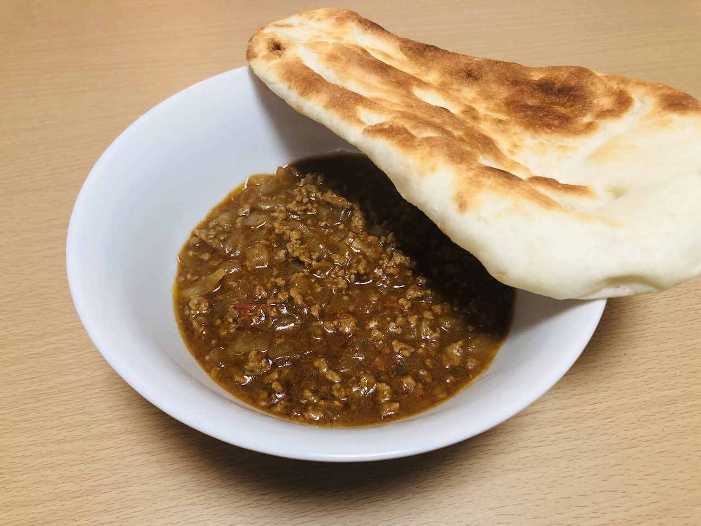

I often go to the Indian curry restaurant to enjoy the delicious Indian food, wherever I recently live. That is not only the good taste but also the affordable price.
Today, I tried to cook it by myself.
Material
Ground meat 250gOnion(middle size) 1
Curry roux(powder)
Garlic 10g Salad oil tomato 1
Procedure
- Finely chop the onions and the garlic and the tomato.
- Add salad oil to a frying pan, fry the garlic until you can feel the good smell.
Then fry the chopped onions. and the tomato. - Add the ground meat and fry.
- Add the Curry roux, fry it for 1-3 minutes, not until the it become totally dry.
The time depends on the performance of your stove. - Finish!
